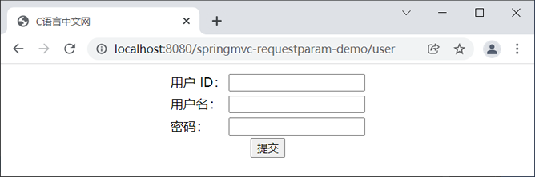
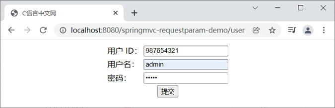
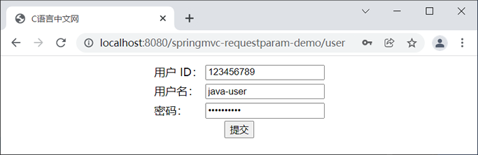
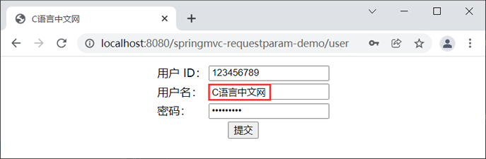

首页 > Spring MVC
Spring MVC获取请求参数
Spring MVC 提供了多种获取请求参数的方式：
下面我们就对这些获取请求参数的方式一一进行介绍。
1. 创建一个名为 springmvc-requestparam-demo 的 Web 项目，并将 Spring MVC 相关的依赖引入到项目中，web.xml 配置如下。
2. 在 src 下（类路径下）创建一个名为 springMVC.xml 的 Spring MVC 配置文件，配置内容如下。
4. 在 net.biancheng.c.controller 包下，新建一个名为 ParamController 的 Controller 类，代码如下。
5. 在 webapp/WEB-INF 下新建一个 templates 目录，并在该目录下创建一个 index.html，代码如下。
6. 将 springmvc-requestparam-demo 部署到 Tomcat 服务器中，启动 Tomcat，使用浏览器访问“http://localhost:8080/springmvc-requestparam-demo/getRequestParam?name=C语言中文网&url=c.biancheng.net”，控制台输出如下。
例如，当发送的请求的 url 为“http://localhost:8080/project/test?name=tom&language=java”时，那么处理该请求的控制器方法的代码如下。
通过控制器方法的形参获取请求参数时，我们需要注意以下几点。
例如，请求 url 为“http://localhost:8080/project/test?a=java&b=1025”，此时我们可以通过以下 2 种方式来获取请求参数。
1) 直接通过 String 类型的参数来接收请求参数。
2）使用 int 或 Integer 类型的参数接收 b 参数。
1. 在 springmvc-requestparam-demo 项目的 net.biancheng.ccontorller 包下，创建一个名为 FormalParamController 的 Controller 类，代码如下。
2. 在 webapp/WEB-INF/tempaltes 目录中创建一个 user.html，代码如下。
3. 在 webapp/WEB-INF/tempaltes 目录中创建一个 success.html，代码如下。
4. 重启 Tomcat 服务器，使用浏览器访问“http://localhost:8080/springmvc-requestparam-demo/user”，结果如下。
5. 在表单中分别输入用户 ID：987654321，用户名：admin，密码：admin，如下图。
6. 点击下面的“提交”按钮，控制台输入的内容如下。
例如，如果请求的地址为“http://localhost:8080/project/test?name=Java&pass=yyds”，那么负责处理该请求的控制器方法可以是这样的，代码如下。
@RequestParam 注解中共包含 4 个属性，如下表所示。
1. 在 springmvc-requestparam-demo 的 net.biancheng.c.entity 包下，创建一个名为 User 的实体类，代码如下。
2. 在 net.biancheng.c.controller 包下，创建一个名为 UserController 的 Controller 类，代码如下。
2. 修改 webapp/WEB-INF/tempaltes 目录中的 user.html，代码如下。
5. 重启 Tomcat 服务器，使用浏览器访问“http://localhost:8080/springmvc-requestparam-demo/user”，结果如下图。
图3：实体类获取请求参数-表单
6. 在表单中分别输入用户 ID：123456789，用户名：java-user，密码：qwertyuiop，如下图。
7. 点击下面的“提交”按钮，控制台输入的内容如下。
例如，我们使用浏览器访问“http://localhost:8080/springmvc-requestparam-demo/user”，并在表单中的用户名输入“C语言中文网”，如下图。
Spring MVC 默认提供了一个过滤器 CharacterEncodingFilter，我们只需要在 web.xml 中对该 Filter 进行简单的配置，即可解决请求和响应中的中文乱码问题，代码如下。
重启 Tomcat 服务器，再次访问“http://localhost:8080/springmvc-requestparam-demo/user”，再次在表单中输入如图 5 的内容，最后点击提交按钮，控制台输入如下。
- 通过 HttpServletRequest 获取请求参数
- 通过控制器方法的形参获取请求参数
- 使用 @RequestParam 注解获取请求参数
- 通过实体类对象获取请求参数（推荐）
下面我们就对这些获取请求参数的方式一一进行介绍。
通过 HttpServletRequest 获取请求参数
我们可以在控制器方法中设置一个 HttpServletRequest 类型的形参，Spring MVC 会自动将请求中携带的参数封装到 HttpServletRequest 形参中，然后我们就可以通过 HttpServletRequest 提供的 getParameter() 方法获取所需的请求参数了。示例
下面我们就通过一个简单的实例，来演示下如何通过 HttpServletRequest 获取请求参数。1. 创建一个名为 springmvc-requestparam-demo 的 Web 项目，并将 Spring MVC 相关的依赖引入到项目中，web.xml 配置如下。
<?xml version="1.0" encoding="UTF-8"?>
<web-app xmlns:xsi="http://www.w3.org/2001/XMLSchema-instance" xmlns="http://xmlns.jcp.org/xml/ns/javaee"
xsi:schemaLocation="http://xmlns.jcp.org/xml/ns/javaee http://xmlns.jcp.org/xml/ns/javaee/web-app_4_0.xsd"
id="WebApp_ID" version="4.0">
<display-name>first-springmvc-demo</display-name>
<!-- 配置SpringMVC的前端控制器，对浏览器发送的请求统一进行处理 -->
<servlet>
<servlet-name>dispatcherServlet</servlet-name>
<servlet-class>org.springframework.web.servlet.DispatcherServlet</servlet-class>
<!--配置 DispatcherServlet 的一个初始化参数：spring mvc 配置文件按的位置和名称-->
<init-param>
<param-name>contextConfigLocation</param-name>
<param-value>classpath:springMVC.xml</param-value>
</init-param>
<load-on-startup>1</load-on-startup>
</servlet>
<servlet-mapping>
<servlet-name>dispatcherServlet</servlet-name>
<!--设置springMVC的核心控制器所能处理的请求的请求路径/所匹配的请求可以是/login或.html或.js或.css方式的请求路径但是/不能匹配.jsp请求路径的请求-->
<url-pattern>/</url-pattern>
</servlet-mapping>
</web-app>
2. 在 src 下（类路径下）创建一个名为 springMVC.xml 的 Spring MVC 配置文件，配置内容如下。
<?xml version="1.0" encoding="UTF-8"?>
<beans xmlns="http://www.springframework.org/schema/beans"
xmlns:xsi="http://www.w3.org/2001/XMLSchema-instance"
xmlns:context="http://www.springframework.org/schema/context"
xsi:schemaLocation="http://www.springframework.org/schema/beans
http://www.springframework.org/schema/beans/spring-beans.xsd
http://www.springframework.org/schema/context
https://www.springframework.org/schema/context/spring-context.xsd ">
<!--开启组件扫描-->
<context:component-scan base-package="net.biancheng.c"></context:component-scan>
<!-- 配置 Thymeleaf 视图解析器 -->
<bean id="viewResolver"
class="org.thymeleaf.spring5.view.ThymeleafViewResolver">
<property name="order" value="1"/>
<property name="characterEncoding" value="UTF-8"/>
<property name="templateEngine">
<bean class="org.thymeleaf.spring5.SpringTemplateEngine">
<property name="templateResolver">
<bean class="org.thymeleaf.spring5.templateresolver.SpringResourceTemplateResolver">
<!-- 视图前缀 -->
<property name="prefix" value="/WEB-INF/templates/"/>
<!-- 视图后缀 -->
<property name="suffix" value=".html"/>
<property name="templateMode" value="HTML5"/>
<property name="characterEncoding" value="UTF-8"/>
</bean>
</property>
</bean>
</property>
</bean>
</beans>
4. 在 net.biancheng.c.controller 包下，新建一个名为 ParamController 的 Controller 类，代码如下。
package net.biancheng.c.controller;
import org.springframework.stereotype.Controller;
import org.springframework.web.bind.annotation.RequestMapping;
import javax.servlet.http.HttpServletRequest;
@Controller
public class ParamController {
@RequestMapping("/")
public String sayHello() {
return "index";
}
/**
* 通过 HttpServletRequest 获取请求参数
* @param request
* @return
*/
@RequestMapping("/getRequestParam")
public String requestParam(HttpServletRequest request) {
String name = request.getParameter("name");
String url = request.getParameter("url");
System.out.println("name:" + name);
System.out.println("url:" + url);
return "index";
}
}
5. 在 webapp/WEB-INF 下新建一个 templates 目录，并在该目录下创建一个 index.html，代码如下。
<!DOCTYPE html>
<html lang="en" xmlns:th="http://www.thymeleaf.org">
<head>
<meta charset="UTF-8">
<title>C语言中文网</title>
</head>
<body>
<h1 th:text="'欢迎您访问：C语言中文网'"></h1>
</body>
</html>
6. 将 springmvc-requestparam-demo 部署到 Tomcat 服务器中，启动 Tomcat，使用浏览器访问“http://localhost:8080/springmvc-requestparam-demo/getRequestParam?name=C语言中文网&url=c.biancheng.net”，控制台输出如下。
name:C语言中文网 url:c.biancheng.net
通过形参获取请求参数
我们可以在 Controller 的控制器方法中设置与请求参数同名的形参，以获取请求中携带的参数。当浏览器发送的请求匹配到这个控制器方法时，Spring MVC 会自动将请求参数赋值给相应的方法形参。例如，当发送的请求的 url 为“http://localhost:8080/project/test?name=tom&language=java”时，那么处理该请求的控制器方法的代码如下。
@RequestMapping("/test")
public String test(String name, String language) {
System.out.println("a：" + a);
System.out.println("b：" + b);
return "success";
}
通过控制器方法的形参获取请求参数时，我们需要注意以下几点。
1. 必须保证参数名一致
我们必须保证控制器方法的形参名称与请求中携带参数的名称完全一致（区分大小写），否则控制器方法接收到的请求参数值会是 null。如果由于一些特殊原因，实在无法保证参数名严格一致，我们还可以通过 @RequestParam 注解来解决。
2. 无视数据类型
这种方式是无视参数的数据类型的，我们可以在控制器方法中使用 String 字符串类型的形参接收所有的请求参数，也可以根据实际情况在控制器方法中使用对应数据类型的参数来接收请求参数，而无须自行进行数据类型转换。例如，请求 url 为“http://localhost:8080/project/test?a=java&b=1025”，此时我们可以通过以下 2 种方式来获取请求参数。
1) 直接通过 String 类型的参数来接收请求参数。
@RequestMapping("/test")
public String test(String a, String b) {
System.out.println("a：" + a);
System.out.println("b：" + b);
return "success";
}
2）使用 int 或 Integer 类型的参数接收 b 参数。
@RequestMapping("/test")
public String test(String a, Integer b) {
System.out.println("a：" + a);
System.out.println("b：" + b);
return "success";
}
3. 不适用于请求参数过多的请求
当请求中携带的参数过多时，如果我们还使用这种方式来获取请求参数，那就需要我们在控制器方法中设置大量的形参，这会让使代码变得十分臃肿，不易维护。4. 同名请求参数的处理方式
当请求中包含多个同名的请求参数时，我们可以通过以下 2 种类型的形参来获取请求参数。| 形参的数据类型 | 获取到的请求参数值 | 举例 |
|---|---|---|
| String（字符串） | 所有同名请求参数的值通过逗号（“,”）拼接在一起。 | "true,false,true" |
| 数组 |
由所有同名请求参数值组成的数组。 该数组通常为 String（字符串）类型的，如果所有同名请求参数值都符合同一个数据类型的规范，我们还可以使用与之对应的数据类型的数组进行接收。例如，如果所有同名请求参数的取值都是 true 或 false，那么我们就可以在控制器方法中使用 Boolean 类型数组的形参进行接收。 |
{"true", "false", "true"} |
示例
下面，我们就来通过一个简单的实例，来演示下如何通过控制器的形参来获取请求参数。1. 在 springmvc-requestparam-demo 项目的 net.biancheng.ccontorller 包下，创建一个名为 FormalParamController 的 Controller 类，代码如下。
package net.biancheng.c.controller;
import org.springframework.stereotype.Controller;
import org.springframework.web.bind.annotation.RequestMapping;
@Controller
public class FormalParamController {
/**
* 跳转到 user.html
* @return
*/
@RequestMapping("/user")
public String sayHello() {
return "user";
}
/**
* 通过形参获取请求参数
* @param userId
* @param userName
* @param password
* @return
*/
@RequestMapping("/getFormalParam")
public String getFormalParam(String userId, String userName, String password) {
System.out.println("userId：" + userId);
System.out.println("userName：" + userName);
System.out.println("password：" + password);
return "success";
}
}
2. 在 webapp/WEB-INF/tempaltes 目录中创建一个 user.html，代码如下。
<!DOCTYPE html>
<html lang="en" xmlns:th="http://www.thymeleaf.org">
<head>
<meta charset="UTF-8">
<title>C语言中文网</title>
</head>
<body>
<form th:action="@{/getFormalParam}" method="post">
<table style="margin: auto">
<tr>
<td>用户 ID：</td>
<td><input type="text" name="userId" required><br></td>
</tr>
<tr>
<td>用户名：</td>
<td><input type="text" name="userName" required><br></td>
</tr>
<tr>
<td>密码：</td>
<td><input type="password" name="password" required><br></td>
</tr>
<tr>
<td colspan="2" align="center"><input type="submit"></td>
</tr>
</table>
</form>
</body>
</html>
3. 在 webapp/WEB-INF/tempaltes 目录中创建一个 success.html，代码如下。
<!DOCTYPE html>
<html lang="en" xmlns:th="http://www.thymeleaf.org">
<head>
<meta charset="UTF-8">
<title>C语言中文网</title>
</head>
<body>
<h1 th:text="'恭喜您,操作成功!'"></h1>
</body>
</html>
4. 重启 Tomcat 服务器，使用浏览器访问“http://localhost:8080/springmvc-requestparam-demo/user”，结果如下。

图1：通过形参获取请求参数-表单
图1：通过形参获取请求参数-表单
5. 在表单中分别输入用户 ID：987654321，用户名：admin，密码：admin，如下图。

图2：通过形参获取请求参数
图2：通过形参获取请求参数
6. 点击下面的“提交”按钮，控制台输入的内容如下。
userId：987654321 userName：admin password：admin
使用 @RequestParam 注解获取
我们可以在控制器方法中通过 @RequestParam 注解，在请求参数与控制器方法的形参之间建立起映射关系，将它们绑定起来。这样即使请求参数与控制器方法中的形参名称不一致，我们也能获取到对应的请求参数值。例如，如果请求的地址为“http://localhost:8080/project/test?name=Java&pass=yyds”，那么负责处理该请求的控制器方法可以是这样的，代码如下。
@RequestMapping("/testRequestParam")
public String testRequestParam(@RequestParam("name") String username, @RequestParam("pass") String password) {
System.out.println(username + "," + password);
return "success";
}
@RequestParam 注解中共包含 4 个属性，如下表所示。
| 属性 | 说明 |
|---|---|
| name |
请求中的参数名。 name 为 @RequestParam 注解 value 属性的别名，它与 value 属性完全等价。 |
| value |
请求中的参数名。 value 为 @RequestParam 注解 name 属性的别名，它与 name 属性完全等价。 |
| required |
该请求参数名是否必须，默认值为 true，即默认情况下请求中必须包含对应的请求参数名，否则就会抛出异常。 注意：required 属性是对请求参数名设置的规则，但并没有对该请求参数是否有值进行限制。也就是说，当 required 属性为 true 或没有设置 required 属性时，请求中就必须包含对应的参数名，至于该请求参数是否有值则无所谓。 |
| defaultValue |
请求参数的默认值。 注意： defaultValue 属性会使 required ="true" 失效，即将 required 属性自动设置为 false。 |
通过实体类对象获取（推荐）
我们可以在 Controller 控制器方法的形参中设置一个实体类形参，如果请求参数的参数名与实体类中的属性名一致，那么 Spring MVC 会自动将请求参数封装到该实体类对象中。此时我们就可以通过该实体类对象获取所需的请求参数了。下面，我们通过一个简单的实例，来演示下如何通过实体类获取请求参数。注：我们推荐大家使用实体类对象来获取请求参数，这也是最常用的请求参数的方式之一，它能够有效地解决“控制器方法形参不适用于请求参数过多的请求”问题。
1. 在 springmvc-requestparam-demo 的 net.biancheng.c.entity 包下，创建一个名为 User 的实体类，代码如下。
package net.biancheng.c.entity;
public class User {
private String UserId;
private String UserName;
private Integer age;
public String getUserId() {
return UserId;
}
public void setUserId(String userId) {
UserId = userId;
}
public String getUserName() {
return UserName;
}
public void setUserName(String userName) {
UserName = userName;
}
public Integer getAge() {
return age;
}
public void setAge(Integer age) {
this.age = age;
}
@Override
public String toString() {
return "User{" +
"UserId='" + UserId + '\'' +
", UserName='" + UserName + '\'' +
", age=" + age +
'}';
}
}
2. 在 net.biancheng.c.controller 包下，创建一个名为 UserController 的 Controller 类，代码如下。
package net.biancheng.c.controller;
import net.biancheng.c.entity.User;
import org.springframework.stereotype.Controller;
import org.springframework.web.bind.annotation.PostMapping;
import org.springframework.web.bind.annotation.RequestMapping;
@Controller
public class UserController {
/**
* 通过实体类获取请求参数
*
* @param user
* @return
*/
@RequestMapping("/getUser")
public String getUser(User user) {
System.out.println("userId：" + user.getUserId());
System.out.println("userName：" + user.getUserName());
System.out.println("password：" + user.getPassword());
return "success";
}
}
2. 修改 webapp/WEB-INF/tempaltes 目录中的 user.html，代码如下。
<!DOCTYPE html>
<html lang="en" xmlns:th="http://www.thymeleaf.org">
<head>
<meta charset="UTF-8">
<title>C语言中文网</title>
</head>
<body>
<form th:action="@{/getUser}" method="post">
<table style="margin: auto">
<tr>
<td>用户 ID：</td>
<td><input type="text" name="userId" required><br></td>
</tr>
<tr>
<td>用户名：</td>
<td><input type="text" name="userName" required><br></td>
</tr>
<tr>
<td>密码：</td>
<td><input type="password" name="password" required><br></td>
</tr>
<tr>
<td colspan="2" align="center"><input type="submit"></td>
</tr>
</table>
</form>
</body>
</html>
5. 重启 Tomcat 服务器，使用浏览器访问“http://localhost:8080/springmvc-requestparam-demo/user”，结果如下图。
图3：实体类获取请求参数-表单
6. 在表单中分别输入用户 ID：123456789，用户名：java-user，密码：qwertyuiop，如下图。

图4：输入请求参数
图4：输入请求参数
7. 点击下面的“提交”按钮，控制台输入的内容如下。
userId：123456789 userName：java-user password：qwertyuiop
解决获取请求参数的乱码问题
当我们在 post 请求中传递的参数为中文时，控制器方法获取到的参数值会出现乱码的情况。例如，我们使用浏览器访问“http://localhost:8080/springmvc-requestparam-demo/user”，并在表单中的用户名输入“C语言中文网”，如下图。

图5：表单输入中文
点击提交按钮后，控制台输出如下。
图5：表单输入中文
userId：123456789 userName：Cè??è¨?????????? password：987654321
Spring MVC 默认提供了一个过滤器 CharacterEncodingFilter，我们只需要在 web.xml 中对该 Filter 进行简单的配置，即可解决请求和响应中的中文乱码问题，代码如下。
<!--请求和响应的字符串过滤器-->
<filter>
<filter-name>CharacterEncodingFilter</filter-name>
<filter-class>org.springframework.web.filter.CharacterEncodingFilter</filter-class>
<!--设置请求的编码-->
<init-param>
<param-name>encoding</param-name>
<param-value>UTF-8</param-value>
</init-param>
<!--设置响应的编码，这里我们可以省略-->
<init-param>
<param-name>forceResponseEncoding</param-name>
<param-value>true</param-value>
</init-param>
</filter>
<filter-mapping>
<filter-name>CharacterEncodingFilter</filter-name>
<url-pattern>/*</url-pattern>
</filter-mapping>
重启 Tomcat 服务器，再次访问“http://localhost:8080/springmvc-requestparam-demo/user”，再次在表单中输入如图 5 的内容，最后点击提交按钮，控制台输入如下。
userId：123456789 userName：C语言中文网 password：987654321
通常情况下，我们都需要在 Spring MVC 的 web.xml 中对 CharacterEncodingFilter 进行配置，以防止请求或响应信息中出现中文乱码。
关注公众号「站长严长生」，在手机上阅读所有教程，随时随地都能学习。内含一款搜索神器，免费下载全网书籍和视频。

微信扫码关注公众号